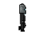
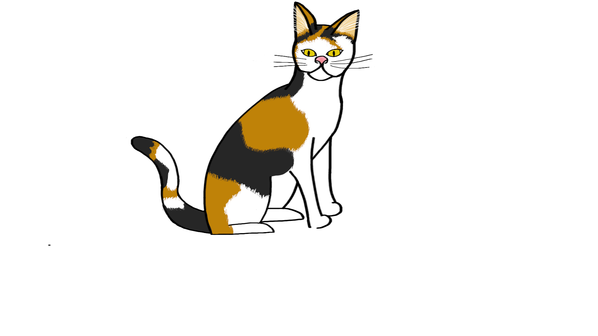
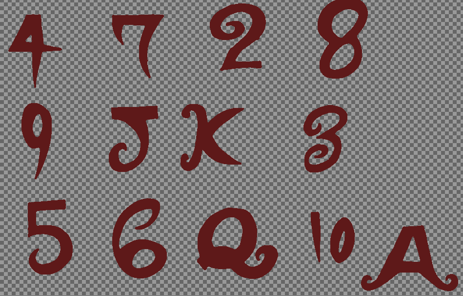
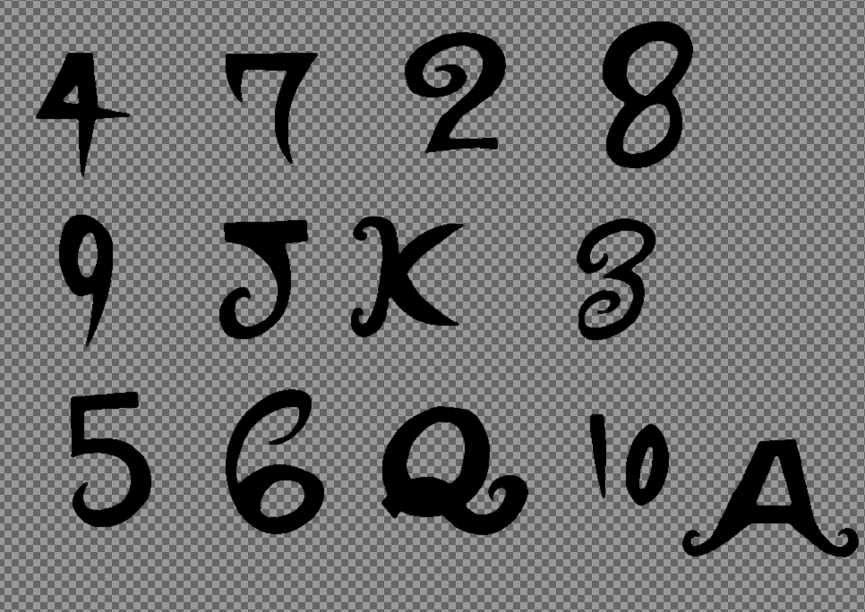

I did the artwork for the Midas game and the multiple trackers for 1861, both mentioned on the Game page and have pictures of said art, through Photoshop.
I have also done some artwork while learning different game engines to use as placeholders. Below is some of the work I have done that falls into this category.
   I also keep sketches in a sketchbook, though I treat my art as a means to continue working on a game more than art for the sake of art. This page is to show that my art ability is strong enough to use for concepts, placeholders, and prototyping, and I can do some assets in a pinch.